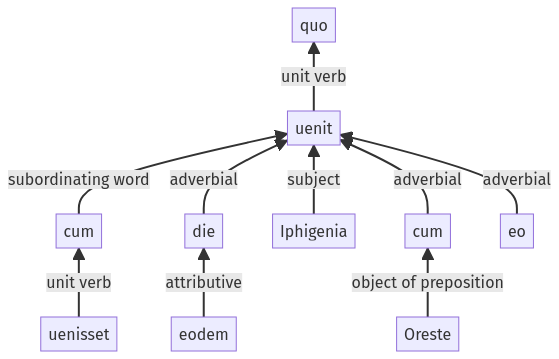

Hyginus, Fabulae, 122a.2.10-122a.2.19a
122a.2.1-122a.2.9a | 122a.2.20-122a.2.30a
Sentence 1206
122a.2.10-122a.2.19a
quo cum uenisset, eodem die Iphigenia cum Oreste uenit eo.
2 cum uenisset
1 eodem die Iphigenia cum Oreste uenit eo
quo cum uenisset, eodem die Iphigenia cum Oreste uenit eo.
Highlighting:
- connecting words
- unit verb
- subject
- object
Color code:
- Independent clause (level 1, intransitive verb)
- subordinate clause (level 2, intransitive verb)
